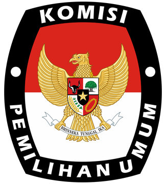

Pilih Periode Survei
Silakan pilih periode layanan yang ingin Anda nilai. Hanya periode yang sedang dibuka yang dapat dipilih.
Terisi 0%

Silakan pilih periode layanan yang ingin Anda nilai. Hanya periode yang sedang dibuka yang dapat dipilih.